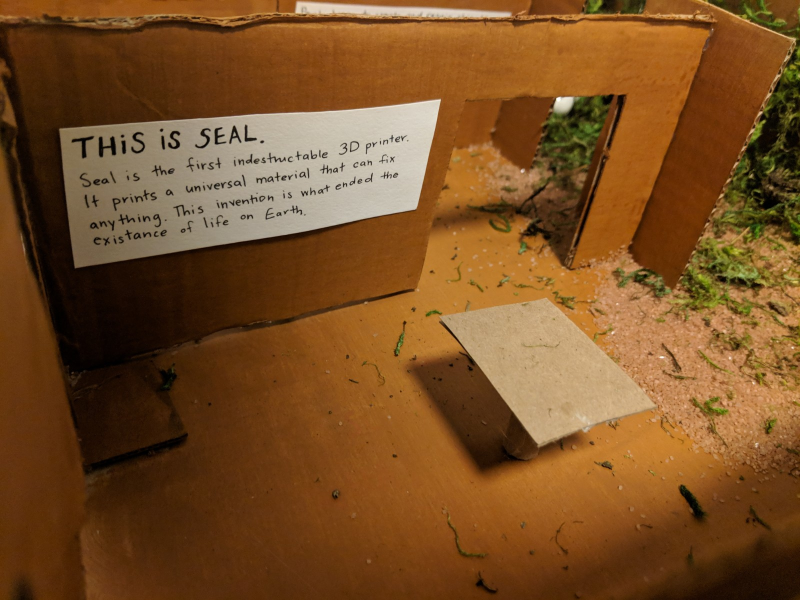

.

My interest and focus was on the 3D printed material and the accessability of the material.
I speculated a more near and possible future rather than a fantasy-based future.
Instead of creating a digital rendering, I decided to take a more fun route and create a diaorama.